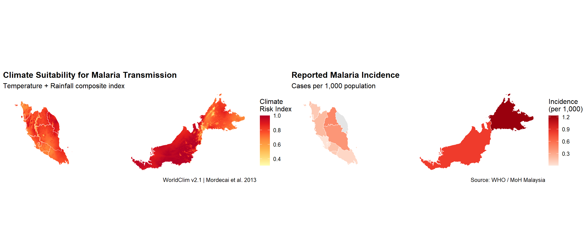

mys <- gadm("MYS", level = 1, path = "data/raw/")
# Climate layers (annual mean temp °C, annual precip mm)
tmean <- worldclim_country("MYS", var = "tavg", path = "data/raw/")
prec <- worldclim_country("MYS", var = "prec", path = "data/raw/")Malaria Risk Mapping in Malaysia (Demo)
1 Load spatial data
1.1 Admin boundaries
1.2 Annual mean temperature (mean of 12 monthly layers)
tmean_ann <- mean(tmean)
prec_ann <- sum(prec) / 12 # average monthly precipitationplot(tmean_ann, main = "Annual Mean Temperature (°C)")
plot(prec_ann, main = "Average Monthly Precipitation (mm)")
2 Apply risk functions
temp_suit <- temp_suitability(tmean_ann)
rain_suit <- rain_suitability(prec_ann)2.1 Crop to Malaysia boundary
temp_suit <- mask(crop(temp_suit, mys), mys)
rain_suit <- mask(crop(rain_suit, mys), mys)plot(temp_suit, main = "Temperature Suitability")
plot(rain_suit, main = "Rainfall Suitability")
2.2 Compute composite risk index
risk <- compute_risk_index(temp_suit, rain_suit)plot(risk, main = "Composite Malaria Risk Index")
3 Load and join case data
3.1 Generate dummy data
set.seed(42)
malaria_sim <- data.frame(
NAME_1 = c("Sabah","Sarawak","Kelantan","Pahang","Perak",
"Terengganu","Kedah","Johor","Negeri Sembilan",
"Melaka","Selangor","Pulau Pinang","Perlis",
"Putrajaya","Kuala Lumpur","Labuan"),
cases = c(4820,2310,890,670,540,430,310,280,190,
120,95,60,40,15,10,8),
population = c(3900000,2800000,1900000,1700000,2500000,
1200000,2200000,3800000,1100000,
930000,6500000,1800000,250000,
100000,1800000,100000)
) |> dplyr::mutate(
incidence = (cases / population) * 1000,
risk_cat = cut(incidence, breaks = c(0,0.1,0.5,1,5,Inf),
labels = c("Very Low","Low","Moderate","High","Very High"))
)
# Convert to sf for joining
mys_sf <- sf::st_as_sf(mys)
mys_sf <- dplyr::left_join(mys_sf, malaria_sim, by = "NAME_1")4 Visualise
4.1 Climate risk map
p1 <- ggplot() +
geom_spatraster(data = risk) +
geom_sf(data = mys_sf, fill = NA, colour = "white", linewidth = 0.3) +
scale_fill_distiller(palette = "YlOrRd", direction = 1,
name = "Climate\nRisk Index",
na.value = "transparent") +
labs(title = "Climate Suitability for Malaria Transmission",
subtitle = "Temperature + Rainfall composite index",
caption = "WorldClim v2.1 | Mordecai et al. 2013") +
theme_void(base_size = 12) +
theme(plot.title = element_text(face = "bold"))<SpatRaster> resampled to 500208 cells.p1
4.2 Reported case incidence choropleth
p2 <- ggplot(mys_sf) +
geom_sf(aes(fill = incidence), colour = "white", linewidth = 0.3) +
scale_fill_distiller(palette = "Reds", direction = 1,
name = "Incidence\n(per 1,000)",
na.value = "grey90") +
labs(title = "Reported Malaria Incidence",
subtitle = "Cases per 1,000 population",
caption = "Source: WHO / MoH Malaysia") +
theme_void(base_size = 12) +
theme(plot.title = element_text(face = "bold"))
p2
Plot side-by-side
p1 + p2
Save image for sharing
ggsave("outputs/maps/malaria_risk_malaysia.png",
width = 14,
height = 6,
dpi = 200)